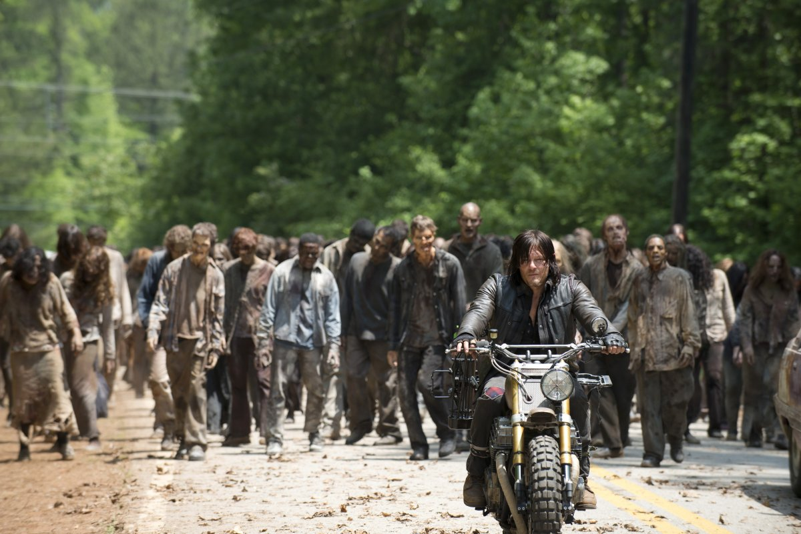
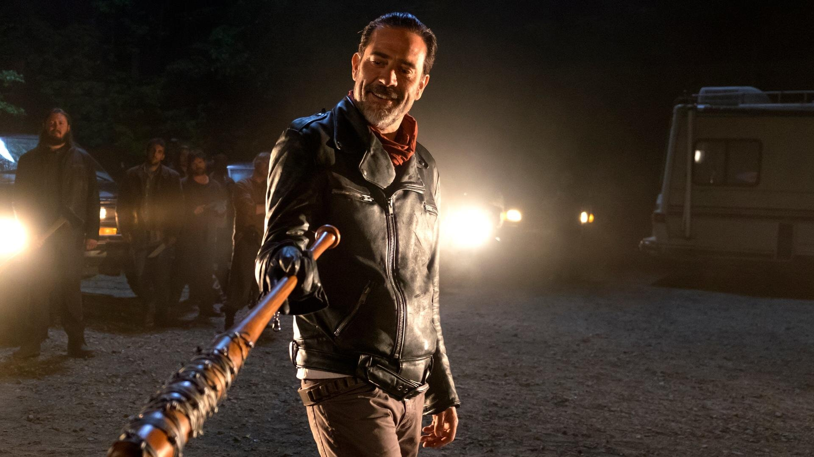
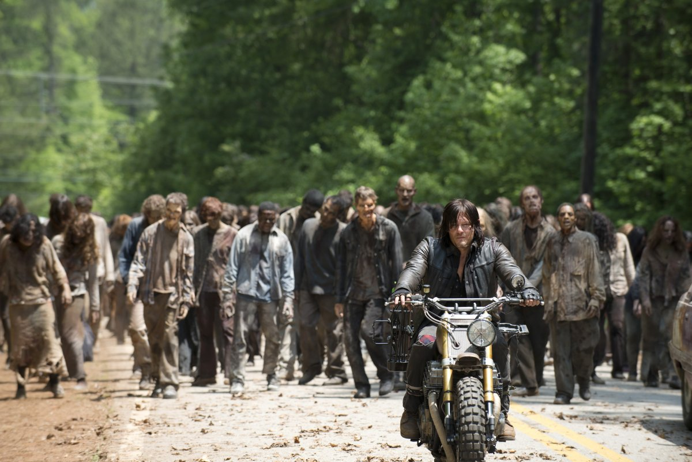
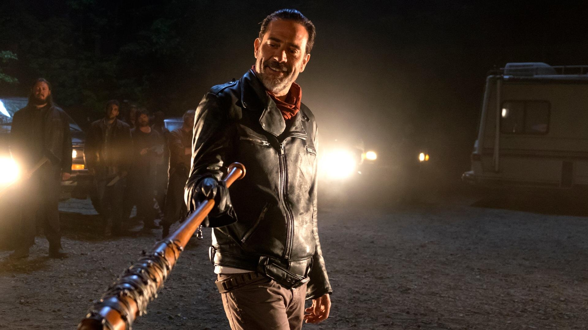

Сюжет серіалу "Ходячі мерці" розвиває нині дуже популярну тематику зомбі-апокаліпсису.
Основна мета всіх головних персонажів – вижити за всяку ціну.
У світі зомбі суть людей дуже змінюється. Рік Граймс,
помічник шерифа прокидається після тривалої коми в зовсім незнайомому світі,
що буквально кишить зомбі. Причини чому це сталося невідомі.
Стрес чоловік, звичайно, відчуває ще той.
Шок від нового світового порядку швидко минає і Рік з тверезою головою розпочинає свою власну боротьбу за виживання.
Рік: 2010
Країна: США
Жанр: Трилери, Драми, Жахи, Фантастика
Остання серія: 11 сезон 16 серія
Тривалість: 43 хв.
Режисер: Грег Нікотеро, Ернест Р. Дікерсон, Гай Ферленд
У ролях: Ендрю Лінкольн, Норман Рідус, Мелісса Сюзанн МакБрайд, Лорен Кохен, Данай Гуріра, Джош Макдермітт, Крістіан Серратос, Сет Гілліам, Чендлер Ріггз, Росс Маркванд

 


